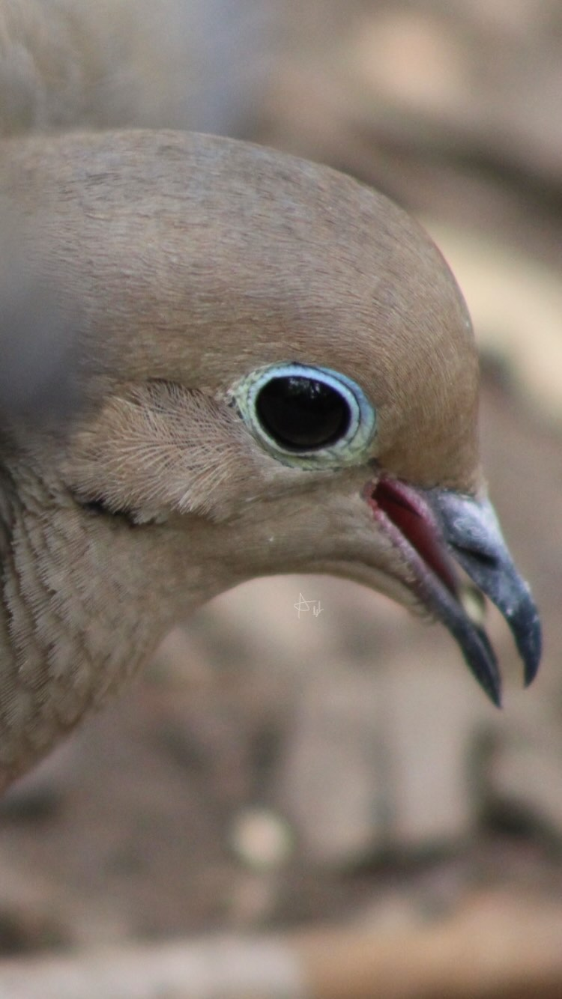
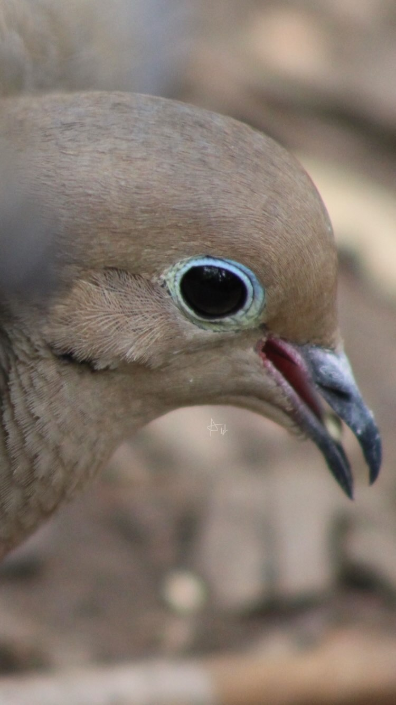

Who am I?
I am a recent graduate of Skidmore College, who enjoys teaching, music, wildlife photography, and game development. At Skidmore, I studied Computer Science, with a minor in Religious Studies. Computer Science is a natural fit for me, as I had been curious about the technology around the house from a young age. I liked to play with toy computers and peer into the VCR. Then, I started programming small video games in the Scratch programming language. In college, I was initially considering the pre-medical track, but I felt it was best to explore my options a bit more, and soon enough I was learning Java and Python. Learning to code is not the easiest of things to do. Computers are indifferent, unfeeling machines that refuse to negotiate. They are not moved by your stresses, or concerned with the urgency of your deadlines. I think that is one of the harder things to learn about programming a computer. You need to communicate with them, but they still are machines that neither possess the intention to frustrate you, nor the capacity to appreciate human emotion. Handily, computers are also incapable of judgement. Once you understand that, computers are easier to work with.
The religious studies is, academically, quite different from computing and gave me some needed variety in my college days. I enjoy mythology, and a good story, so I took a course in Hindu Myth. I enjoyed it, and Professor Kent encouraged me to continue studying in the field, by the time I applied for a minor, I had nearly finished it. As for my thoughts about it, for the sake of scope, I would rather keep my musings short here. As much as people deserve to think magically, and non magically, the influence of such thinking cannot be overstated. The stories of the past were told by many tellers, with many purposes, and still they endure. It is good to study them, so you can keep the story tellers accountable.
Toward the end of college I took a part time job teaching. I found it to be stressful at times, but enjoyable overall. It is wonderful to students people gain confidence in their abilities. As of today, I have taught children from ages of 5 - 15 in elementary programming, theater, comedy, and drama. Children are funny and chaotic people, but when you do finally get their attention it is a joy to see them learn about things they love.
I also dabble with pixel art, chiptune music, and esoteric programming language development. Such skills are needed for game development!
Feel free to click around here and have a look at my resume and personal projects. I hope you enjoy yourself!
 
Contact Me
Email Me at avella1@skidmore.edu>@AndrewJVella on Github>
My Resume
View in New TabDownload a Copy
Github Projects
Keybird Password ManagerBird Photography
Little Glowing Birds on InstagramLittle Glowing Birds on Threads